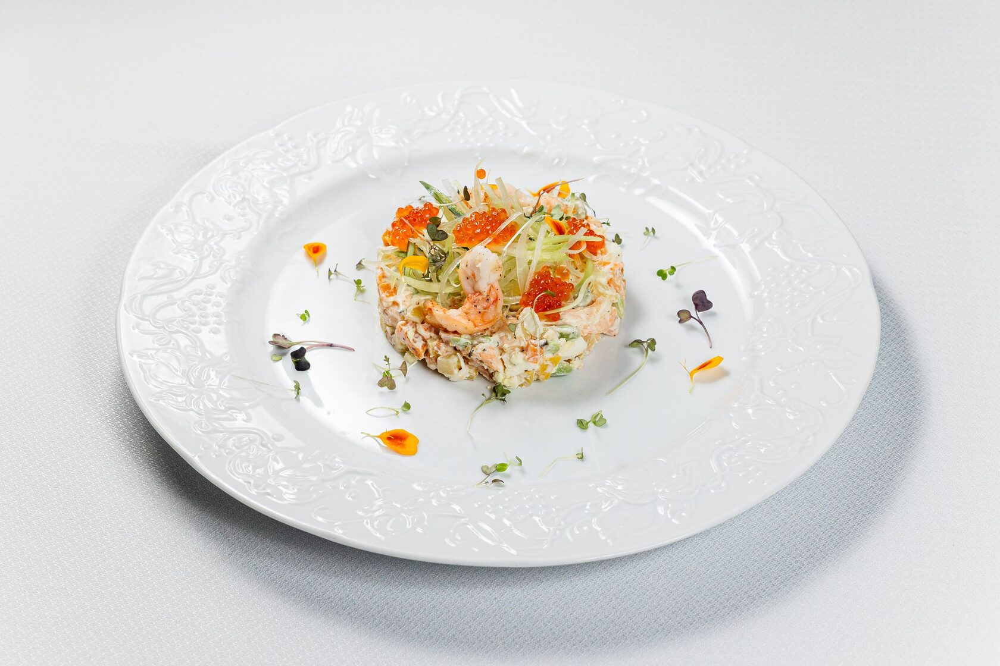
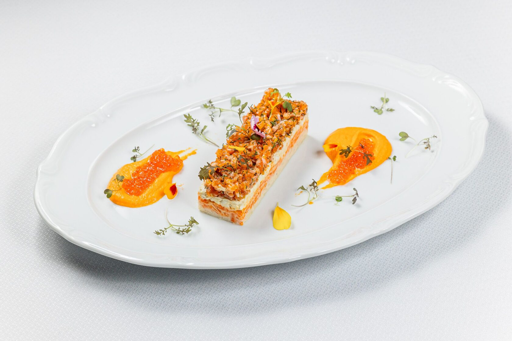
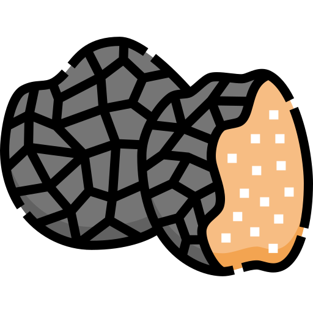
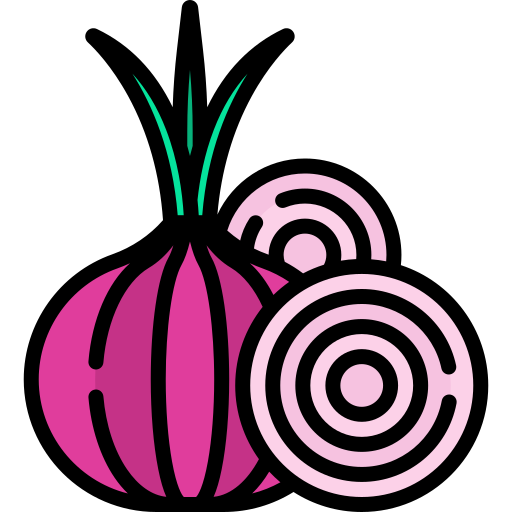
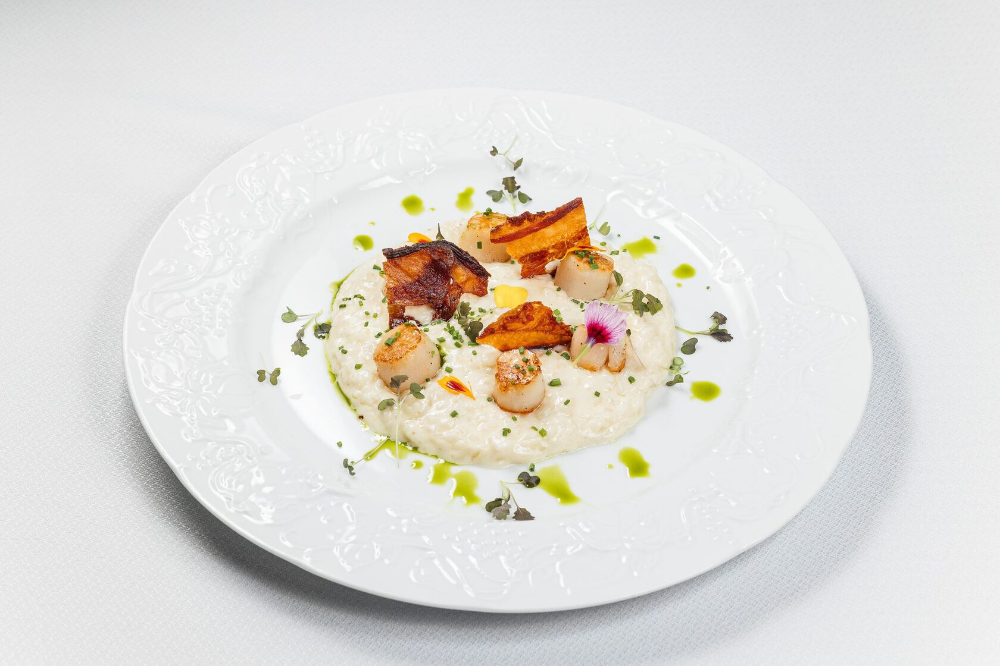
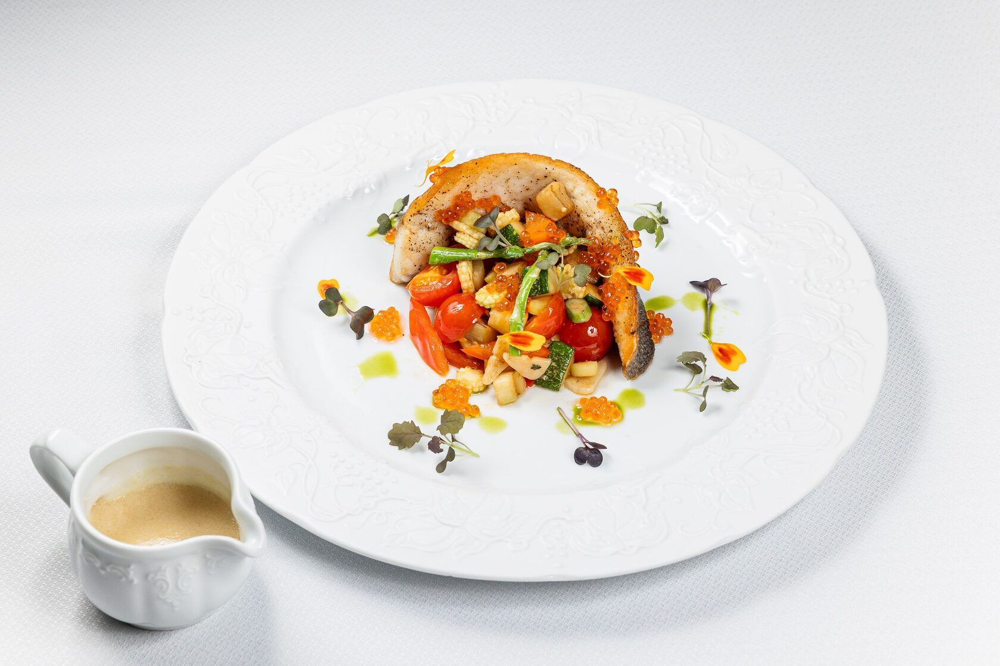
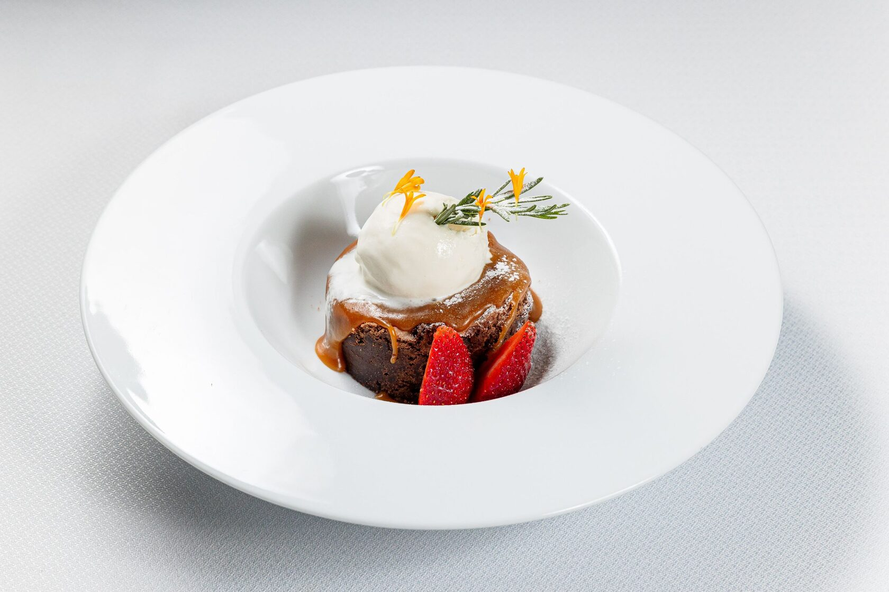

Зимнее меню в Sabor de la Vida
Салаты
Оливье с креветкой и красной икрой
Домашний оливье с нежной креветкой, красной икрой, хрустящими овощами и перепелиным яйцом под шелковистым сливочным соусом. Знакомый и уютный вкус в нашем авторском исполнении.
Особенности:
🥛 лактоза

Презентуем и замешиваем при госте.
{kind=link}

Состав:
- Креветка.
- Икра красная лососевая.
- Батат.
- Бобы эдамаме.
- Яйцо перепелиное.
- Огурец свежий.
- Сельдерей.
- Патиссон.
- Масло зеленое.
- Кресс-салат.
Соус:
- Сливки.
- Креметта.
- Соус рыбный (уксус рыбный концентрированный)
Оливье́ — закусочный салат русской кухни из отварных корнеплодов, солёных огурцов, яиц с мясом или варёной колбасой в майонезной заправке. По распространённой версии, носит имя автора рецепта — французского шеф-повара Люсьена Оливье (1838—1883), работавшего в знаменитом ресторане «Эрмитаж» и воспринимается в России как французское блюдо, в то время как за пределами ближнего зарубежья он в разных вариациях известен как «русский салат». Первоначальный вариант салата был намного богаче современного в котором присутствовали пернатая дичь, телячий язык, раковые шейки и паюсная икра. Со временем рецепт упростился и стал народным: в советскую эпоху классическими ингредиентами стали варёная колбаса или мясо, картофель, морковь, зелёный горошек, солёные огурцы и яйца, объединённые майонезом. Именно эта версия стала традиционной «новогодней классикой».
Мимоза с форелью и красной икрой
Нежная «Мимоза» в утончённом исполнении со слабосолёной форелью и красной икрой, в сочетании с мягким картофелем, сладкой морковью и перепелиным яйцом, дополненный ярким морковно-цитрусовым соусом.
Особенности:
🥛 лактоза | 🍋 цитрусы |  мёд |
мёд |  зелень
зелень
Форель маринуют с добавлением фреша лимона, цедры апельсина и укропа.
Соус морковно-цитрусовый содержит сливки, мёд и лимонный фреш.
{kind=link}

Состав:
- Форель с/с маринуется с добавлением фреша лимона, цедры апельсина и укропа.
- Картофель.
- Морковь.
- Яйцо перепелиное (натертое).
- Майонез
- Масло зеленое.
- Кресс-салат.
Все ингредиенты выкладываются слоями, заправляются майонезом. Отдельно на тарелку выкладывают соус морковно-цитрусовый и красную лососевую икру (10 г.).
Соус морковно-цитрусовый:
- Морковь.
- Сливки.
- Фреш лимона.
- Мёд.
- Корень имбиря.
- Масло сливочное.
- Пектин (загуститель).
«Мимо́за» — праздничный слоёный салат или салат-коктейль, появившийся в СССР в начале 1970-х годов. Получил название из-за внешнего сходства с цветками мимозы. Классический вариант салата включает рыбу консервированную (чаще сайру или горбушу), тёртое варёное яйцо, картофель, морковь, лук и майонез. Ингредиенты выкладываются слоями, создавая мягкую, нежную текстуру и гармоничное сочетание вкусов.
Со временем у «Мимозы» появилось множество интерпретаций: с красной рыбой, сливочными соусами, свежими травами, цитрусовыми нотами и лёгкими овощными акцентами. Благодаря своей воздушной структуре и утончённому вкусу салат остаётся неизменным фаворитом среди холодных закусок.
Салат с перепелкой, пряной тыквой и трюфельным соусом
Тёплый салат с перепёлкой и запечённой тыквой, в сопровождении свежих листьев салата, кусочков сочного мандарина под ароматным трюфельным соусом.
Особенности:
🥛 лактоза |🍋 цитрусы | мёд |
мёд |

трюфельСалат с добавлением свежего мандарина и соуса Мандарин: мандарин, красный апельсин, мёд и масло сливочное.
Соус трюфельный с добавлением мёда.
Украшают сыром грана падано.

Состав:
- Перепелка маринуется с добавлением тимьяна, соли и перца, затем запекается с утиным жиром.
- Добавляем запечённую тыкву (соль, перец) и очищенный мандарин.
- Листья салата латук, мини-шпинат.
- Заправляем трюфельным соусом.
- Сверху выкладываем соус Мандарин.
- Перед отдачей перепелка и тыква обжигается горелкой.
- Украшают тертым сыром грана падано.
Соус трюфельный:
- Паста трюфельная.
- Масло трюфельное.
- Масло оливковое.
- Мёд.
- Перец черный.
Соус Мандарин:
- Фреш мандарина (выпаривают).
- Пюре красного апельсина.
- Мёд.
- Масло сливочное.
🥘 Горячие блюда
Сливочное ризотто с морскими гребешками
Нежное сливочное ризотто с обжаренным гребешком, хрустящим беконом, дополненное ароматным зелёным маслом и свежей зеленью.
Особенности:
🥛 лактоза |

лук |Ризотто готовится с добавлением: лука шалот, белого вина, сливок и куриного бульона.
Предупреждаем про жаренный бекон.
{kind=link}

Состав:
- База ризотто: рис, лук шалот, вино белое, масло оливковое.
- Добавляем сливки, бульон куриный, грана падано, масло сливочное.
- Сверху выкладывается обжаренный на сливочном масле гребешок и жаренный бекон.
- Украшается луком резанец и зеленым маслом.
Филе сибаса с соусом Шампань
Нежное филе сибаса, обжаренное до золотистой корочки в сочетании с ассорти из обжаренных овощей и дополненное мягким сливочно-игристым соусом «Шампань».
Особенности:
🥛 лактоза | лук |  вино | кинза |
вино | кинза |  зелень
зелень
Соус Шампань на сливочной основе с добавлением полусладкого игристого вина, лука шалот и сливочного масла.
Украшается кинзой.
{kind=link}

Состав:
- Сибас обжаривают на оливковом масле, затем запекают в духовке.
- Гарнируется обжаренными овощами.
- Украшают красной икрой, кинзой, микро салатом, зеленым маслом.
- Соус Шампань (подается отдельно).
Гарнир:
- Баклажан.
- Перец болгарский.
- Цукини.
- Томаты черри.
- Мини кукуруза.
- Спаржа.
Соус Шампань:
- Игристое вино (полусладкое) (выпаривают с луком шалот).
- Лук шалот.
- Сливки.
- Грана Падано.
- Масло сливочное.
- Перец черный.
Все ингредиенты пробиваются блендером.
Филе Миньон с соусом Глинтвейн и пюре из сельдерея
Сочный стейк Филе Миньон, томлёный в ароматном Глинтвейне и обжаренный до румяной корочки, подаётся с нежным пюре из сельдерея в сопровождении ягодного глинтвейнового соуса.
Особенности:
🥛 лактоза | 🍋 цитрусы | мёд |
мёд |  зелень |
зелень | вино
вино
Глинтвейн содержит красное вино, апельсины, лимоны и мёд.
Украшается цедрой апельсина, микрозеленью и луком резанец.
В составе пюре из сельдерея сливки и сыр Грана Падано.

Состав:
- Стейк Филе Миньон готовится в су-вид с соусом Глинтвейн, затем обжаривается на оливковом масле на сковороде.
- Гарнируется пюре из сельдерея (корень сельдерея, сливки, Грана Падано, масло сливочное).
- Поливается соусом Глинтвейн с добавлением клюквы.
- Украшается зеленым спонжем, цедрой апельсина, микрозеленью и луком резанец.
Соус Глинтвейн:
- Красное сухое вино.
- Апельсин.
- Лимон.
- Яблоко.
- Корица.
- Гвоздика.
- Бадьян.
- Мёд.
Выпариваем до густоты.
Cпонж:
- Яйцо куриное.
- Мука пшеничная.
- Разрыхлитель.
- Сахар.
- Масло оливковое.
🎂 Десерты
Рождественский брауни с соленой карамелью
Тёплый шоколадный брауни с нежной соленой карамелью и освежающим мороженым из Шампанского.
Особенности:
🥛 лактоза |  вино
вино
В составе присутствуют сливки.
Подается с мороженным с добавлением игристого вина. Для детей мороженое заменяем на ванильное.
{kind=link}

Состав:
Брауни:
- Мука пшеничная.
- Яйцо куриное.
- Шоколад темный.
- Масло сливочное.
- Сахар.
Соленая карамель:
- Сливки.
- Сахар.
- Масло сливочное.
Мороженое Шампань:
- Вино игристое.
- Сливки.
- Желток куриного яйца.
Украшается сахарной пудрой, свежей клубникой и веточкой розмарина.
Бра́уни (англ. Chocolate brownie) — классический американский десерт, появившийся в конце XIX века. Свое название он получил благодаря характерному тёмно-коричневому цвету («brown»). Традиционно брауни готовят из тёмного шоколада, сливочного масла, сахара, яиц и небольшого количества муки, что создаёт плотную, влажную текстуру, напоминающую что-то среднее между пирогом и мягким шоколадным фондю.
Ключевая особенность брауни — насыщенный вкус какао и фирменная «фаджи» структура: слегка хрустящая корочка снаружи и тягучая, сочная середина. Со временем появились многочисленные вариации: с орехами, карамелью, специями, ягодами, морской солью и различными кремами или мороженым.
Сегодня брауни — один из самых популярных десертов мира, известный своей простотой, богатым вкусом и универсальностью в подаче: от домашних версий до ресторанных интерпретаций с соусами, муссами и сорбетами.